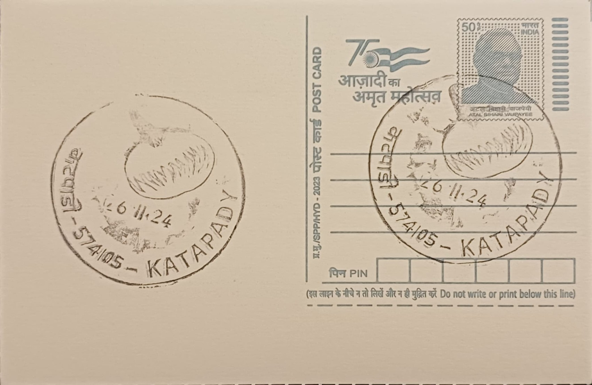

Mattu Gulla
ಮಟ್ಟು ಗುಳ್ಳ


Mattu Gulla takes its name from the small coastal village of Mattu (also rendered Matti), situated between the Udyavara and Swarna rivers near Udupi in Karnataka. Local tradition traces the brinjal's origin to Sri Vadiraja Tirtha, a revered pontiff of the Sode Vadiraja Matha associated with the Udupi Ashta Matha tradition, who is said to have gifted the seeds of this distinctive green brinjal to the farmers of Mattu roughly four centuries ago. This founding legend has given the vegetable a sacred standing rarely accorded to an ordinary agricultural crop, and the villagers of the area have continued cultivating it from the same lineage of seed ever since, treating the practice as both a livelihood and an inherited religious duty.
Botanically a cultivar of brinjal (Solanum melongena), Mattu Gulla is distinguished chiefly by its pale green skin, compact round-to-oval shape, markedly sweet flesh, reduced seed content, and near absence of the bitterness typical of other brinjal varieties. These qualities are attributed to the particular combination of soil and micro-climate found only in the narrow belt where it is grown, a marshy, low-lying tract where the plant is believed to draw and fix atmospheric nitrogen, naturally enriching the soil in which it stands. In recognition of this unique character tied to place, Mattu Gulla was awarded the Geographical Indication tag in 2011, one of the earliest such tags granted to a vegetable from coastal Karnataka, which legally restricts use of the name to produce grown within its traditional villages.
Cultivation of Mattu Gulla has historically been concentrated in a cluster of villages around Mattu, including Kaipunjalu, Katapady, Kote, Pangala, Alinja, Ambadi and Uliyaragoli, within a traditional growing tract once estimated at roughly five hundred to seven hundred and fifty acres. Farmers follow a largely organic, low-input method of cultivation passed down through generations, relying on the natural fertility of the marshy coastal soil rather than heavy chemical inputs, with the crop typically sown ahead of the monsoon and harvested through the following months. In recent decades, however, the area under cultivation has reportedly contracted by around half, owing to labour shortages, the conversion of farmland to other uses, and the competing pull of non-agricultural employment in a rapidly urbanising coastal belt.
The most distinctive ritual associated with Mattu Gulla is the offering of the season's first harvested brinjal to Lord Krishna at the Krishna Matha in Udupi, a practice that is said to continue uninterrupted to the present day. The timing of this offering is closely linked to the Krishna Janmashtami festival, when the vegetable features prominently in temple prasadam and in festive preparations across Udupi households, reinforcing its identity as food fit for sacred use rather than ordinary consumption alone. This religious association has also shaped the vegetable's economics, since demand spikes sharply around the festival calendar, and farmers and traders in Mattu time much of their harvest and sale around this period of heightened ritual and culinary demand.
In the years since the GI recognition, local farmer producer organisations, academic institutions such as the Manipal Academy of Higher Education, and regional bodies have launched incubation and value-addition programmes aimed at processing Mattu Gulla into products like pickles and ready-to-cook mixes, partly to counter the shrinking area under direct cultivation. Collaborations between these institutions and student groups have also sought to improve farmer incomes by branding and marketing the vegetable beyond its traditional local markets. Today, Mattu Gulla is grown by a limited number of families within its historic belt near Katapadi, its supply tightly tied to the fortunes of coastal Udupi's smallholder farmers, who continue to treat its cultivation as an obligation inherited from the matha tradition as much as a commercial activity.
| Date of Introduction | November 26, 2024 |
|---|---|
| Address | Sub Postmaster, |
| Katapadi SO, | |
| Udupi (dt.), Karnataka - 574105. |